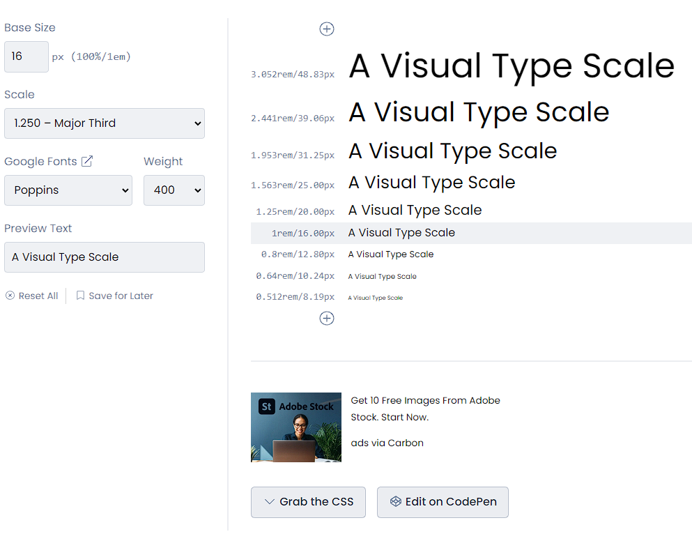

Choosing a font
Working with fonts a great tool to use is "TypeScale.com". The program allows you to test sizes, font families and pair fonts. Font hiarachy is an important part of a website. We are working with display fonts and paragraph text. Usually iis better to choose a simple dispaly font like a sans serif and not a crazy display font. Choosing fonts its better to go with two types of fonts and work with boldness and making the text itallic etc.

Image from typeScale.com